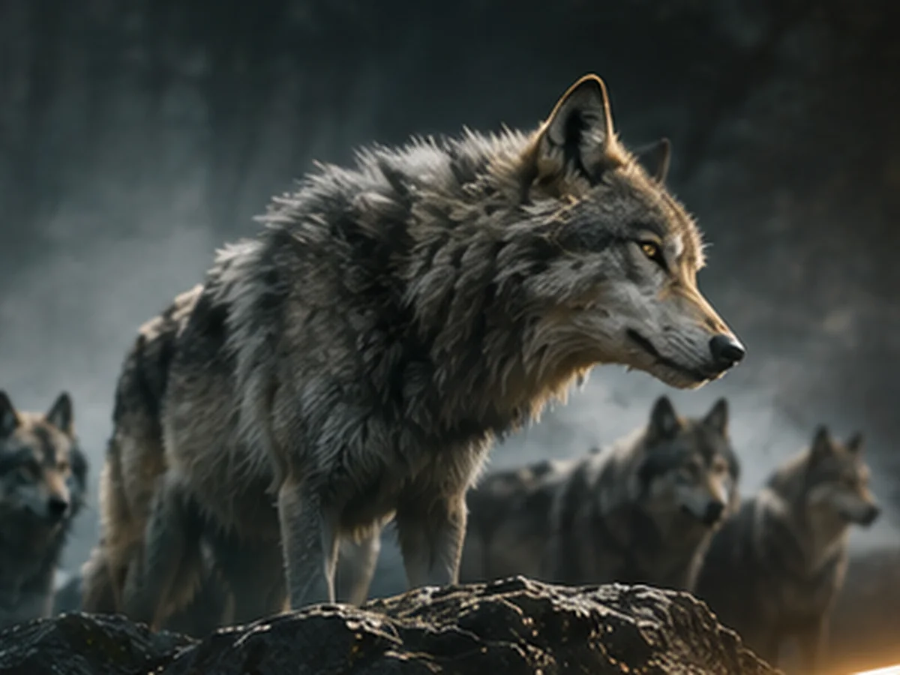

07 · A management revolution
From Wolf Pack to Ant Colony.
The management mindset has to change. Switch the model and watch the structure reorganise.

The old style
Wolf PackStrong at hunting single targets. As scale grows, it hits the limit of the leader’s brain overload.
The new HAiO
Ant ColonyNo ant gives orders to another, yet the whole colony creates magnificent structures.


Two keywords, true in every era
Process & Procedure.
The future of management lies not in how hard you work, but in how intelligently you organize your system. HAiO is not just a title; it is the posture of a leader mastering the automation era.
Are you ready to become the architect of your own ecosystem?